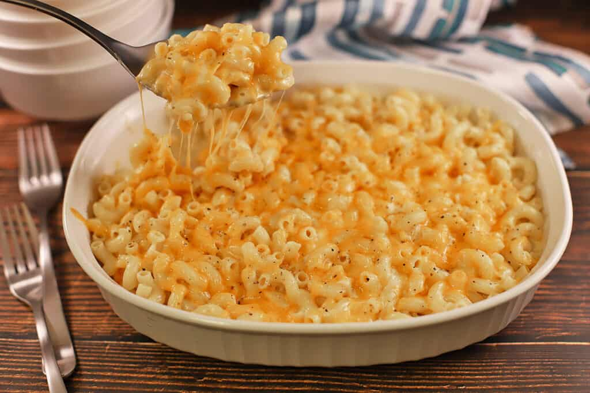

Mac n' Cheese Recipe

- Prep time: 10 minutes
- Cooking time: 15 minutes
- Serves: 4
Ingredients
- 8 ounces of macaroni
- 1/4 cup of butter
- 1/2 teaspoon of salt
- 2 cups of milk
- 2 cups of shredded cheddar cheese
- Ground black pepper
Directions
- Gather the ingredients
- Bring a large pot of lightly salted water to a boil. Cook macaroni in the boiling water, stirring occasionally for around 8 minutes (until cooked through but firm to the bite).
- At the same time, melt butter in a saucepan over medium heat.
- Add flour, salt, and pepper and stir for around 5 minutes until smooth.
- Pour in milk slowly while stirring continuously. Continue to cook and stir until mixture is smooth and bubbling, about 5 minutes, making sure the milk doesn't burn.
- Add cheddar cheese and stir for around 2-4 minutes until melted.
- Drain macaroni and fold into cheese sauce until coated.
- Bon appetit! You can add more cheese if you'd like, maybe half a cup or so, although not too much as it could ruin the recipe.

I am no chef, so credit to Allrecipes for their recipe that I used. Here's the link to the original.